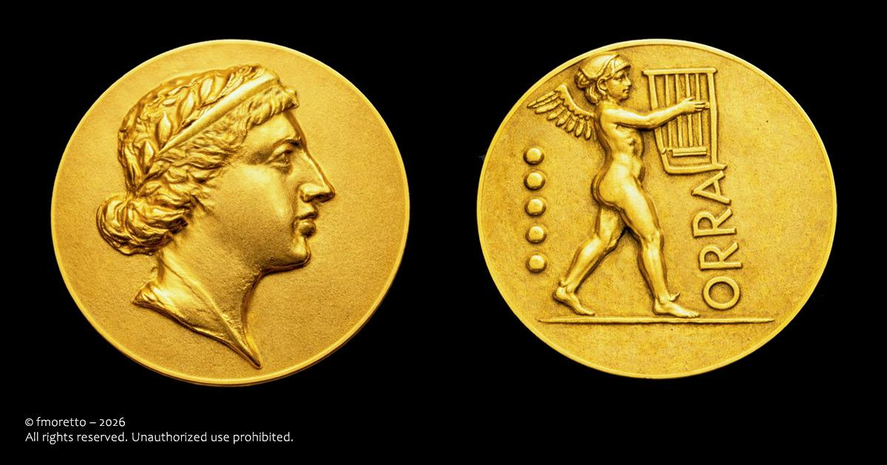
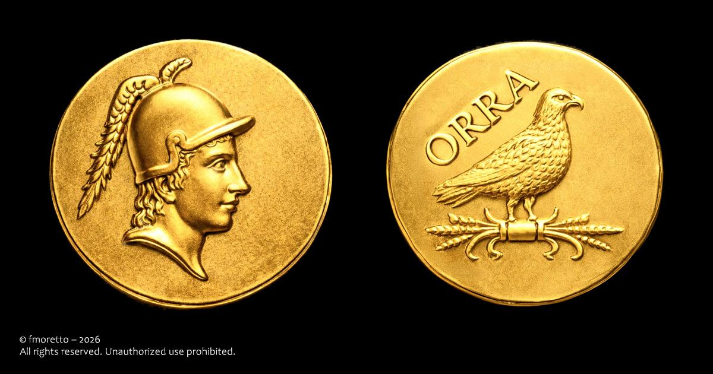
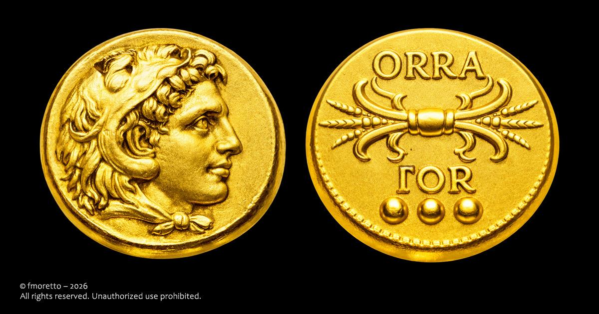
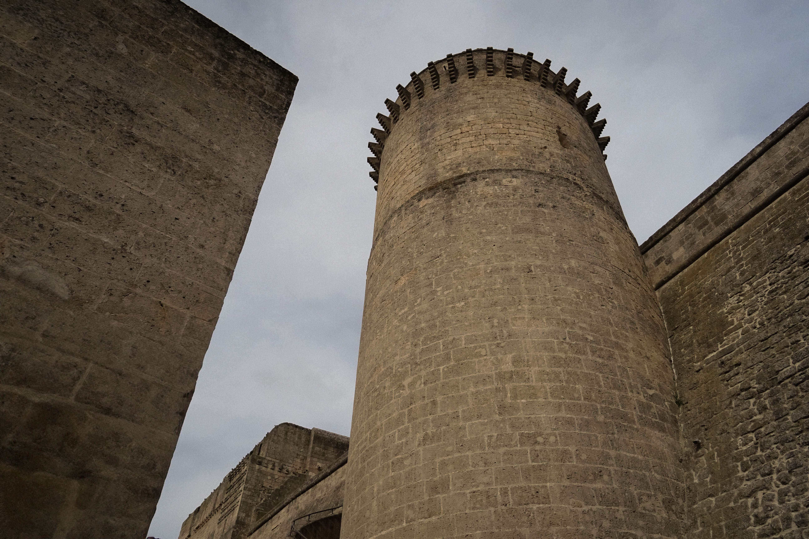
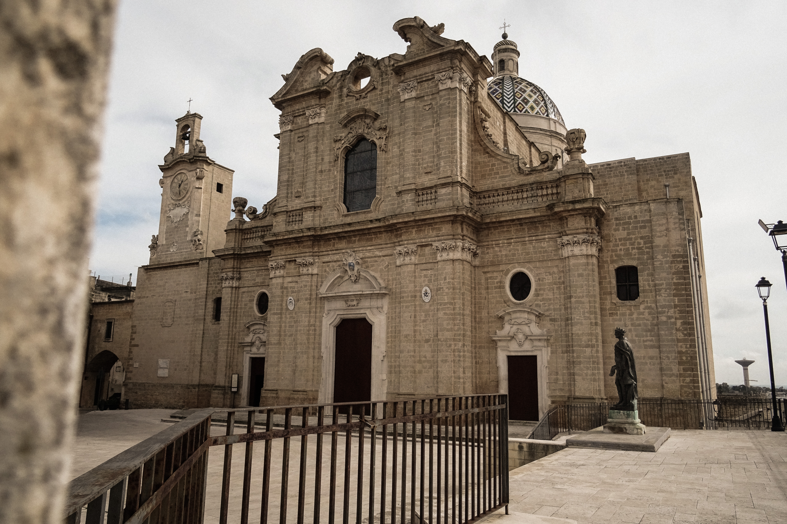

La Storia di Oria
Duemila anni sul colle del Vaglio
Le Origini Messapiche
Le origini di Oria si perdono tra storia e leggenda. Secondo Erodoto, la città nacque da un gruppo di Cretesi naufragati sulle coste del Salento, che scelsero il colle più alto per fondare un primo insediamento chiamato Hyria — nome che probabilmente richiamava Yrìa, città della Beozia da cui provenivano. Dall'VIII secolo a.C. il centro si sviluppò progressivamente fino a diventare la capitale politica della confederazione messapica, intrattenendo intensi rapporti con i centri del Salento e della Magna Grecia. Il legame più importante fu con Taranto: commerciale e culturale da un lato, rivale e militare dall'altro. Questo contrasto culminò nel 473 a.C. con una grande battaglia tra Tarantini, Reggini e Messapi, che indebolì entrambe le parti. Nel 272 a.C., con la caduta di Taranto, anche i Messapi entrarono nell'orbita di Roma. Oria mantenne comunque il suo ruolo di rilievo, tanto che nell'88 a.C. ottenne lo status di municipium romanum, integrandosi nel sistema amministrativo di Roma senza perdere la propria identità storica.

Il nome Uria compare nelle fonti greche e latine già nel VI secolo a.C. Una delle particolarità di Oria è la sua posizione costruita su più colli, caratteristica che nei secoli l’ha resa un luogo naturalmente strategico e facile da difendere. Proprio questa conformazione del territorio ha influenzato lo sviluppo della città fin dall’antichità, contribuendo alla nascita di un centro urbano importante e ben collegato con il resto del Salento.
Età Romana
Quello che sappiamo su Oria nel periodo romano è molto vago, si sa che Oria era diventata un importante centro commerciale, culturale e militare (anche detto municipium romanum) nella rete stradale romana. La via Appia e i suoi rami collegavano Oria ai grandi centri dell'Impero, facilitando lo scambio di beni e idee. Di seguito sono riportate alcune ricostruzioni di monete battute ad Oria in epoca romana.



I Bizantini
Dopo la caduta dell'Impero Romano d'Occidente nel 476 d.C., la Puglia entrò nell'orbita di Bisanzio. La presenza bizantina non fu però ininterrotta: Goti e Longobardi misero continuamente alla prova il controllo greco sulla regione. Nel 663 d.C. l'imperatore Costante II sbarcò a Taranto con ventimila soldati e riconquistò buona parte della Puglia, ma il re longobardo Grimoaldo lo respinse. Costante fuggì in Sicilia, dove fu assassinato in una congiura di palazzo. Senza il loro imperatore, i Bizantini si ritirarono definitivamente dalla Puglia interna. I Longobardi si fermarono però ad Oria senza spingersi oltre, costruendo il Limitone dei Greci — un vallo difensivo che divideva i due mondi. A nord cultura longobarda, a sud cultura bizantina fino a Otranto. Questo confine era anche linguistico: a sud si parlava greco per secoli, nella zona ancora oggi chiamata Grecìa Salentina. I resti del Limitone sono ancora visibili nei pressi del Santuario di San Cosimo alla Macchia.

Il Periodo dei Goti (o Visigoti)
Per quanto riguarda il Medioevo, dobbiamo ricordare che Oria fu attaccata duramente dalle forze dei Goti — chiamati anche Visigoti, ma per brevità diciamo Goti. Riuscirono a cacciare via i Bizantini che stavano in Puglia, spingendoli fino a Otranto. Sulla direttrice di questa avanzata si trovava Oria, che fu assediata per ben due volte. Le cose cambiarono quando Giustiniano, l'imperatore dei Bizantini, mandò un nuovo generale: prima c'era Belisario, poi mandò Narsete. Narsete riuscì a riconquistare tutti i territori perduti, liberando Oria, Brindisi e altre città. I Goti cominciarono a perdere terreno, e ancor di più quando il loro re — prima Totila, poi Teia — fu ucciso in battaglia. I Visigoti si arresero ed ebbero la possibilità di tornarsene nell'Italia settentrionale, passare in Francia e poi in Spagna. Questo è un periodo molto importante della storia di Oria
I Longobardi
Nel 638 d.C. i Saraceni attaccano e danneggiano pesantemente Brindisi, riducendola a un ammasso di rovine. Approfittando della debolezza bizantina, i Longobardi — guidati da Romualdo, duca di Benevento e figlio di Grimoaldo — conquistano la vasta regione tra Brindisi e Oria, descritta nelle fonti latine come latissimam regionem. Romualdo decide di finire di distruggere completamente Brindisi, già devastata dai Saraceni, per un preciso calcolo strategico: non voleva che i Bizantini potessero tornarci, ricostruirla e farne una base militare pericolosa. Distrutta Brindisi, Romualdo ordina ai suoi abitanti di trasferirsi ad Oria, insieme al clero e al vescovo. Oria diventa così sede vescovile e torna ad essere una città di primaria importanza. Le mura vengono restaurate e la città viene rafforzata con un presidio longobardo. I Longobardi si fermano però ad Oria senza avanzare oltre, e costruiscono il Limitone dei Greci — un vallo difensivo ancora parzialmente visibile oggi vicino alla masseria Case Granne, dietro San Cosimo. Questo confine divideva nettamente i due mondi: a nord la cultura longobarda, a sud quella bizantino-greca.


I Normanni
Intorno al 1090 i Normanni, guidati da Boemondo d'Altavilla — principe di Taranto — conquistarono Oria, definendola nei documenti città torrita, ovvero città fortificata con castello. È di quest'epoca la Torre Quadrata del castello sul colle del Vaglio, unica torre di origine normanna: le cortine triangolari sarebbero state aggiunte da Federico II, le torri rotonde dagli Angioini. Dopo aver consolidato il suo dominio sul territorio, Boemondo partì per la Prima Crociata insieme a Goffredo di Buglione e altri principi cristiani, con l'obiettivo di liberare il Santo Sepolcro. Morì in seguito e fu sepolto a Canosa di Puglia. Con i Normanni Oria entrò in una nuova fase della sua storia: da città di confine contesa tra Longobardi e Bizantini divenne centro feudale stabile, proiettato verso il Mediterraneo e le grandi dinamiche politiche del tempo.

Raffigurazione dei Normanni

Federico II e il Castello Svevo
Con la fine del dominio normanno, il Sud Italia passò agli Svevi. Il passaggio avvenne attraverso un matrimonio: Enrico VI, figlio del Barbarossa e imperatore del Sacro Romano Impero, sposò Costanza d'Altavilla, erede normanna del regno di Sicilia. Dal loro figlio, nato il 26 gennaio 1194 a Jesi e chiamato Federico in onore del nonno, sarebbe nata una delle figure più straordinarie del Medioevo europeo. Federico II divenne prima re di Sicilia, poi imperatore del Sacro Romano Impero. Uomo di vastissima cultura, parlava sei lingue e riuniva nella sua persona l'eredità normanna, sveva e mediterranea. Il suo regno trasformò profondamente il Sud Italia, e Oria non fu estranea a questa stagione. Fu Federico a dare al castello sul colle del Vaglio la sua forma definitiva: le cortine, ovvero i tre lati della caratteristica pianta triangolare, sono opera sua. Per questo il castello viene chiamato ancora oggi "Svevo".

In realtà l'edificio che vediamo è una stratificazione di secoli: la Torre Quadrata risale ai Normanni (costruita prima), le cortine a Federico II, le torri rotonde agli Angioini che vennero dopo. Ogni pietra racconta un dominio diverso.
Il castello ha pianta triangolare con quattro torri. Le mura in pietra calcarea locale, spesse fino a 3 metri, erano progettate per resistere agli assedi medievali.
Angioini e Aragonesi
Con la morte di Federico II nel 1250 il regno svevo entrò in crisi. Carlo d'Angiò, sostenuto dal papato, scese in Italia e nel 1266 sconfisse Manfredi — figlio illegittimo di Federico II — nella battaglia di Benevento. Il Sud Italia passò così agli Angioini, dinastia francese che avrebbe governato il territorio per oltre un secolo. Ad Oria fu proprio in questo periodo che vennero costruite le torri rotonde del castello, completando la struttura che ancora oggi possiamo ammirare. Il dominio angioino fu però tutt'altro che stabile. Nel XV secolo gli Aragonesi, provenienti dalla Spagna, scalzarono progressivamente i Francesi dall'Italia meridionale fino a conquistare quasi tutto il regno. Oria resistette a lungo: nel 1504 era ancora una delle poche città della Puglia a non essere caduta, presidiata da una guarnigione francese attestata nel castello. Fu allora che Pedro de Paz, generale spagnolo, la assediò — una vicenda che si sarebbe conclusa con uno dei miracoli più celebri di San Barsanofio, il quale secondo la tradizione apparve sulle mura nella notte per scacciare gli assedianti. Gli Aragonesi furono infine accolti pacificamente, segnando la fine definitiva della presenza francese ad Oria.


Il Seicento — I Marchesi Imperiali
Nel 1572 il re di Spagna Filippo II cedette il feudo di Oria alla famiglia Imperiali, concedendo a David Imperiali il titolo di Marchese. Gli Imperiali avrebbero governato la città per oltre due secoli, lasciando un'impronta profonda sull'assetto urbano e sociale di Oria. Fu però anche un periodo di trasformazione difficile. Il crescente peso del vicino borgo di Francavilla Fontana segnò per Oria una lenta perdita di centralità nel territorio, con traffici e popolazione che si spostavano progressivamente verso sud. Sul piano religioso e artistico il Seicento lasciò invece tracce durature. La Chiesa di San Domenico, eretta dai padri domenicani, si arricchì in questo periodo di altari barocchi di scuola leccese e di tele di pregio. Nei sotterranei della Cattedrale, la Cripta delle mummie custodisce ancora oggi i corpi mummificati dei confratelli dell'Arciconfraternita della Morte — una delle confraternite più antiche della città, legata al culto dei defunti e alla processione dello Scenni Cristu, che ancora oggi attraversa le strade di Oria nel silenzio della Settimana Santa.
Il Terremoto del 20 Febbraio 1743
Il 20 febbraio 1743, una sequenza di tre violente scosse scosse il Salento per circa quindici minuti. L'epicentro era nel Canale d'Otranto, a cinquanta chilometri dalle coste salentine, con una magnitudo stimata di 7.1. Le scosse furono avvertite in un'area vastissima, dal Peloponneso fino a Milano. Oria fu tra le città che subirono i danni più gravi: la cattedrale romanica, cuore della città, venne completamente distrutta. Come in tanti altri centri del Salento, anche gli oritani videro nell'intervento del loro santo patrono la ragione della loro sopravvivenza — fu San Barsanofio, ancora una volta, a ricevere i ringraziamenti della popolazione per la protezione accordata durante il sisma. Il terremoto divenne però anche l'occasione per rinnovare il volto della città. La cattedrale distrutta venne ricostruita in stile barocco e completata nel 1769 — l'edificio che possiamo ammirare ancora oggi sul punto più alto del centro storico.
La sera del 20 febbraio 1743, alle 23:30, una sequenza di violente scosse danneggiò il Salento per diversi minuti. Con una magnitudo stimata tra 6.9 e 7.1, fu uno dei terremoti più devastanti nella storia dell'Italia meridionale: le scosse furono avvertite in un'area vastissima, dal Peloponneso e Malta fino a Trento e Milano.

L'Ottocento e l'Unità d'Italia
Con l'Unità d'Italia nel 1861 Oria entrò a far parte del nuovo regno sabaudo. Il passaggio non fu indolore: negli atti di polizia dell'epoca figurano episodi di malcontento, riunioni sospette e parole oltraggiose verso il re — segno che il sentimento popolare era tutt'altro che unanime verso la nuova Italia. Le tensioni sociali esplosero nel 1880, quando scoppiarono violenti scontri tra oritani e francavillesi. Dopo numerosi arresti da parte dei Carabinieri, oltre cinquemila contadini si diressero verso le carceri per liberare i detenuti. La situazione degenerò al punto da richiedere l'intervento dell'esercito da Brindisi, Taranto, Bari e Lecce. Il secolo si chiuse con una catastrofe naturale: il 21 settembre 1897 un potente ciclone investì la città, danneggiando gravemente la parte occidentale e settentrionale del centro storico. Le antiche porte urbane furono lesionate, alcune statue andarono perdute per sempre e anche il castello subì danni notevoli — tanto da richiedere un restauro che avvenne solo nel 1933, dopo che i Conti Martini-Carissimo lo acquistarono dal Comune.

Il Novecento
Il Novecento fu per Oria un secolo di prove e di rinascita. Come tutta la Puglia, la città visse le due guerre mondiali con i lutti delle famiglie oritane partite per i fronti di mezza Europa. Il fascismo attecchì anche nel territorio brindisino, seguendo quella stessa parabola di speranza e disillusione che attraversò il Sud intero. Con l'armistizio dell'8 settembre 1943 la Puglia divenne il primo territorio italiano liberato dagli Alleati. Oria, come vuole la tradizione, si affidò ancora una volta alla protezione di San Barsanofio, che secondo la devozione popolare aveva preservato la città dai pericoli del conflitto. Nel dopoguerra il castello, acquistato nel 1933 dai Conti Martini-Carissimo e restaurato, tornò progressivamente al centro della vita cittadina. Fu però il 1967 a segnare una svolta decisiva: la Pro Loco di Oria istituì il Corteo Storico di Federico II e il Torneo dei Rioni, rievocazione del torneo cavalleresco indetto dall'imperatore nel 1225 in attesa della sua sposa Jolanda di Brienne. Quella che nacque come festa locale è diventata oggi una delle più importanti rievocazioni medievali d'Italia, con oltre 800 figuranti e il patrocinio della Presidenza della Repubblica


Galleria Fotografica